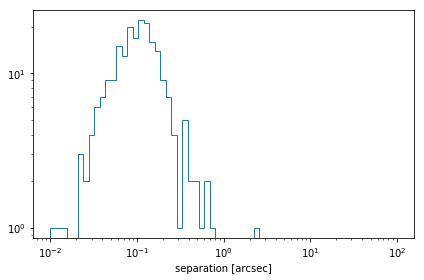
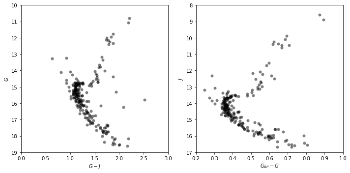

Demonstrate how to retrieve a catalog from Vizier using astroquery
Show how to perform positional cross-matches between catalogs of sky coordinates
coordinates, OOP, astroquery, gaia
In the previous tutorials in this series, we introduced many of the key
concepts underlying how to represent and transform astronomical
coordinates using astropy.coordinates, including how to work with
both position and velocity data within the coordinate objects.
In this tutorial, we will explore how the astropy.coordinates
package can be used to cross-match two catalogs that contain overlapping
sources that may have been observed at different times. You may find it
helpful to keep the Astropy documentation for the coordinates
package
open alongside this tutorial for reference or additional reading. In the
text below, you may also see some links that look like
(docs).
These links will take you to parts of the documentation that are
directly relevant to the cells from which they link.
Note: This is the 4th tutorial in a series of tutorials about astropy.coordinates. If you are new to astropy.coordinates, you may want to start from the beginning or an earlier tutorial. - Previous tutorial: Astronomical Coordinates 3: Working with Velocity Data
We start by importing some general packages that we will need below:
In[1]:
import warnings
import matplotlib.pyplot as plt
%matplotlib inline
import numpy as np
from astropy import units as u
from astropy.coordinates import SkyCoord, Distance
from astropy.io import fits
from astropy.table import QTable
from astropy.time import Time
from astropy.utils.data import download_file
from astroquery.vizier import Vizier
In this tutorial, we are going to return to a set of data that we downloaded from the Gaia archive back in Tutorial 1 of this series.
Let’s recap what we did in that tutorial: We defined a SkyCoord
object to represent the center of an open cluster (NGC 188), we queried
the Gaia DR2 catalog to select stars that are close (on the sky) to
the center of the cluster, and we used the parallax values from Gaia
to select stars that are near NGC 188 in 3D position. Here, we will
briefly reproduce those selections so that we can start here with a
catalog of sources that are likely members of NGC 188 (see Tutorial
1 for more information):
In[2]:
ngc188_table = QTable.read('gaia_results.fits')
ngc188_table = ngc188_table[ngc188_table['parallax'] > 0.25*u.mas]
ngc188_center_3d = SkyCoord(12.11*u.deg, 85.26*u.deg,
distance=1.96*u.kpc,
pm_ra_cosdec=-2.3087*u.mas/u.yr,
pm_dec=-0.9565*u.mas/u.yr)
ngc188_coords_3d = SkyCoord(
ra=ngc188_table['ra'],
dec=ngc188_table['dec'],
distance=Distance(parallax=ngc188_table['parallax']),
pm_ra_cosdec=ngc188_table['pmra'],
pm_dec=ngc188_table['pmdec'],
radial_velocity=ngc188_table['radial_velocity'],
obstime=Time('J2015.5'))
sep3d = ngc188_coords_3d.separation_3d(ngc188_center_3d)
pm_diff = np.sqrt(
(ngc188_table['pmra'] - ngc188_center_3d.pm_ra_cosdec)**2 +
(ngc188_table['pmdec'] - ngc188_center_3d.pm_dec)**2)
ngc188_members_mask = (sep3d < 50*u.pc) & (pm_diff < 1.5*u.mas/u.yr)
ngc188_members = ngc188_table[ngc188_members_mask]
ngc188_members_coords = ngc188_coords_3d[ngc188_members_mask]
len(ngc188_members)
Out[2]:
216
From the selections above, the table ngc188_members and the
SkyCoord instance ngc188_members_coords contain 216 sources
that, based on their 3D positions and proper motions, are consistent
with being members of the open cluster NGC 188.
Let’s assume that we now want to cross-match our catalog of candidate members of NGC 188 — here, based on Gaia data — to some other catalog. In this tutorial, we will demonstrate how to manually cross-match these Gaia sources with the 2MASS photometric catalog to retrieve infrared magnitudes for these stars, and then we will plot a color–magnitude diagram. To do this, we first need to query the 2MASS catalog to retrieve all sources in a region around the center of NGC 188, as we did for Gaia. Here, we will also take into account the fact that the Gaia data release 2 reference epoch is J2015.5, whereas the 2MASS coordinates are likely reported at their time of observation (in the late 1990’s).
Note that some data archives, like the Gaia science archive, support running cross-matches at the database level and even support epoch propagation. If you need to perform a large cross-match, it will be much more efficient to use these services!
We will again use astroquery to execute this query. This will again
require an internet connection, but we have included the results of this
query in a file along with this notebook in case you are not connected
to the internet. To query 2MASS, we will use the astroquery.vizier
module
(docs)
to run a cone search centered on the sky position of NGC 188 with a
search radius of 0.5º:
In[3]:
# NOTE: skip this cell if you do not have an internet connection
# II/246 is the catalog name for the main 2MASS photometric catalog
v = Vizier(catalog="II/246", columns=['*', 'Date'])
v.ROW_LIMIT = -1
result = v.query_region(ngc188_center_3d, radius=0.5*u.deg)
tmass_table = result[0]
Alternatively, we can read the 2MASS table provided along with this tutorial:
In[4]:
# the .read() below produces some warnings that we can safely ignore
with warnings.catch_warnings():
warnings.simplefilter('ignore', UserWarning)
tmass_table = QTable.read('2MASS_results.ecsv')
As with the Gaia results table, we can now create a single
SkyCoord object to represent all of the sources returned from our
query to the 2MASS catalog. Let’s look at the column names in this table
by displaying the first few rows:
In[5]:
tmass_table[:3]
Out[5]:
QTable length=3| Date | RAJ2000 | DEJ2000 | _2MASS | Jmag | e_Jmag | Hmag | e_Hmag | Kmag | e_Kmag | Qflg | Rflg | Bflg | Cflg | Xflg | Aflg |
|---|---|---|---|---|---|---|---|---|---|---|---|---|---|---|---|
| deg | deg | mag | mag | mag | mag | mag | mag | ||||||||
| str10 | float64 | float64 | str16 | float32 | float32 | float32 | float32 | float32 | float32 | str3 | str3 | str3 | str3 | uint8 | uint8 |
| 1999-10-19 | 9.633532 | 84.808350 | 00383204+8448300 | 13.079 | 0.030 | 12.742 | 0.033 | 12.729 | 0.035 | AAA | 222 | 111 | 000 | 0 | 0 |
| 1999-10-19 | 8.562472 | 84.873627 | 00341499+8452250 | 14.459 | 0.029 | 14.103 | 0.041 | 14.166 | 0.063 | AAA | 222 | 111 | 000 | 0 | 0 |
| 1999-10-19 | 8.645318 | 84.868584 | 00343487+8452069 | 10.356 | 0.026 | 10.057 | 0.032 | 10.000 | 0.020 | AAA | 222 | 111 | 000 | 0 | 0 |
From looking at the column names, the two relevant sky coordinate
columns are RAJ2000 for ra and DEJ2000 for dec:
In[6]:
tmass_coords = SkyCoord(tmass_table['RAJ2000'],
tmass_table['DEJ2000'])
len(tmass_coords)
Out[6]:
5014
Note also that the table contains a “Date” column that specifies the epoch of the coordinates. Are all of these epochs the same?
In[7]:
np.unique(tmass_table['Date'])
Out[7]:
<Column name='Date' dtype='str10' description='(date) Observation date' length=1>| 1999-10-19 |
It looks like all of the sources in our 2MASS table have the same epoch,
so let’s create an astropy.time.Time object to represent this date:
In[8]:
tmass_epoch = Time(np.unique(tmass_table['Date']))
We now want to cross-match our Gaia-selected candidate members of NGC
188, ngc_members_coords, with this table of photometry from 2MASS.
However, as noted previously, the Gaia coordinates are given at a
different epoch J2015.5, which is nearly ~16 years after the 2MASS epoch
of the data we downloaded (1999-10-19 or roughly J1999.88). We will
therefore first use the SkyCoord.apply_space_motion() method
(docs)
to transform the Gaia positions back to the 2MASS epoch before we do
the cross-match:
In[9]:
# you can ignore the warning raised here
ngc188_members_coords_1999 = ngc188_members_coords.apply_space_motion(
tmass_epoch)
Out[9]:
/home/circleci/project/venv/lib/python3.7/site-packages/erfa/core.py:155: ErfaWarning: ERFA function "pmsafe" yielded 205 of "excessive velocity (Note 7)"
ErfaWarning)
The object ngc188_members_coords_1999 now contains the coordinate
information for our Gaia-selected members of NGC 188, as we think they
would appear if observed on 1999-10-19.
We can now use the SkyCoord.match_to_catalog_sky method to match
these two catalogs
(docs),
using the ngc188_members_coords_1999 as our NGC 188 members
coordinates.
Note that order matters with this method: Here we will match Gaia to
2MASS. SkyCoord.match_to_catalog_sky returns three objects: (1) the
indices into tmass_coords that get the closest matches in
ngc188_members_coords_1999, (2) the angular separation between each
ngc188_members_coords_1999 coordinate and the closest source in
tmass_coords, and (3) the 3D distance between each
ngc188_members_coords_1999 coordinate and the closest source in
tmass_coords. Here, the 3D distances will not be useful because the
2MASS coordinates do not have associated distance information, so we
will ignore these quantities:
In[10]:
idx_gaia, sep2d_gaia, _ = ngc188_members_coords_1999.match_to_catalog_sky(
tmass_coords)
Let’s now look at the distribution of separations (in arcseconds) for all of the cross-matched sources:
In[11]:
plt.hist(sep2d_gaia.arcsec, histtype='step',
bins=np.logspace(-2, 2., 64))
plt.xlabel('separation [arcsec]')
plt.xscale('log')
plt.yscale('log')
plt.tight_layout()
Out[11]:
From this, it looks like all of sources in our Gaia NGC 188 member list cross-match to another sources within a few arcseconds, so these all seem like they are correctly matches to a 2MASS source!
In[12]:
(sep2d_gaia < 2*u.arcsec).sum(), len(ngc188_members)
Out[12]:
(215, 216)
With our cross-match done, we can now make Gaia+2MASS
color–magnitude diagrams of our candidate NGC 188 members using the
information returned by the cross-match:
In[13]:
Jmag = tmass_table['Jmag'][idx_gaia] # note that we use the index array returned above
Gmag = ngc188_members['phot_g_mean_mag']
Bmag = ngc188_members['phot_bp_mean_mag']
In[14]:
fig, axes = plt.subplots(1, 2, figsize=(10, 5))
ax = axes[0]
ax.scatter(Gmag - Jmag, Gmag,
marker='o', color='k',
linewidth=0, alpha=0.5)
ax.set_xlabel('$G - J$')
ax.set_ylabel('$G$')
ax.set_xlim(0, 3)
ax.set_ylim(19, 10) # backwards because magnitudes!
ax = axes[1]
ax.scatter(Bmag - Gmag, Jmag,
marker='o', color='k',
linewidth=0, alpha=0.5)
ax.set_xlabel('$G_{BP} - G$')
ax.set_ylabel('$J$')
ax.set_xlim(0.2, 1)
ax.set_ylim(17, 8) # backwards because magnitudes!
fig.tight_layout()
Out[14]:
Those both look like color-magnitude diagrams of a main sequence + red giant branch of an intermediate-age stellar cluster, so it looks like our selection and cross-matching has worked!
For more on what matching options are available, check out the
separation and matching section of the Astropy
documentation.
Or for more on what you can do with SkyCoord, see its API
documentation.
In[None]: